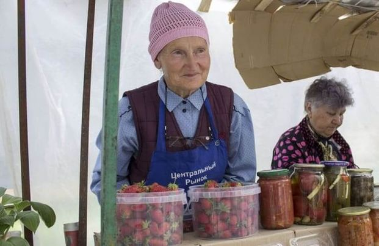

«Денежные кусты»: Секреты выживания на пенсии
Правительство ведёт борьбу с бедностью, но чем активнее ведётся эта борьба, тем беднее становятся люди. Все уже давно поняли, что надеяться на помощь государства не стоит. Пенсионеры жалуются, мол, с выходом на пенсию их жизнь резко переменилась в худшую сторону. «Экономим на коммуналке, еде и лекарствах самыми немыслимыми способами» – заявляют 87% пенсионеров.
